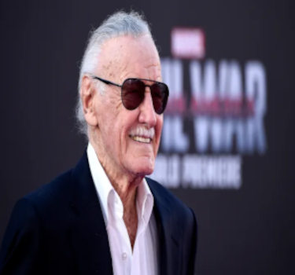
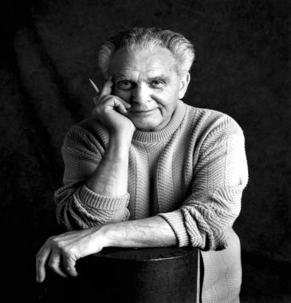

Personagens principais


Personagens secúndarios
Principais pioneiros
Martin Goodman foi um dos pioneiros da indústria de quadrinhos nos Estados Unidos. Ele fundou a Timely Publications em 1939, que mais tarde se tornou a Marvel Comics. Goodman foi fundamental na criação de personagens icônicos como o Tocha Humana, o Namor e o Capitão América, durante a Era de Ouro dos quadrinhos. Sua visão empreendedora e disposição para arriscar ajudaram a estabelecer a base para o sucesso posterior da Marvel, que se transformou em uma das maiores editoras de quadrinhos do mundo.
 Stan Lee é uma lenda dos quadrinhos conhecido por sua inestimável contribuição para a Marvel Comics. Ele começou como assistente de escritório na Timely Comics, que mais tarde se tornou a Marvel, em 1939. Com o tempo, tornou-se escritor e editor-chefe da empresa. Lee foi o cocriador de uma série de personagens icônicos, incluindo o Homem-Aranha, os X-Men, o Hulk, os Vingadores, o Quarteto Fantástico e muitos outros. Sua abordagem inovadora ao criar super-heróis mais humanizados, com falhas e dilemas pessoais, revolucionou a indústria de quadrinhos. Além disso, ele desempenhou um papel significativo na expansão da Marvel para além das páginas dos quadrinhos, levando-a para a TV, o cinema e outros meios de entretenimento. Stan Lee se torno um ícone cultural e seu legado na Marvel e na cultura pop é imensurável.
Jack Kirby foi um dos mais influentes artistas e escritores de quadrinhos da história. Junto com Stan Lee, cocriou muitos dos personagens mais emblemáticos da Marvel, incluindo o Capitão América, os Vingadores, o Quarteto Fantástico, os X-Men e o Hulk. Sua habilidade artística excepcional e sua imaginação fértil moldaram a estética visual e narrativa do universo Marvel. Conhecido por seu estilo dinâmico e inovador, Kirby ajudou a definir o visual e o tom dos quadrinhos de super-heróis. Sua capacidade de criar mundos fantásticos e personagens poderosos, combinada com sua profunda compreensão da narrativa visual, estabeleceu um padrão para gerações de artistas de quadrinhos. Kirby é reverenciado como um dos pilares da indústria de quadrinhos, deixando um legado duradouro que continua a influenciar o mundo dos quadrinhos e do entretenimento.
Principal filme da Marvel

"Vingadores: Guerra Infinita" foi um marco monumental para a Marvel Studios em termos de faturamento e importância para o Universo Cinematográfico Marvel (UCM). Lançado em 2018, o filme alcançou um sucesso estrondoso, arrecadando mais de US$ 2 bilhões globalmente nas bilheterias. Foi um dos filmes mais bem-sucedidos da Marvel e do gênero de super-heróis até então. Além do sucesso financeiro, "Guerra Infinita" foi crucial para os Vingadores e para todo o UCM por várias razões. Em primeiro lugar, reuniu praticamente todos os personagens do UCM em um épico confronto contra o vilão Thanos, unindo tramas e personagens de diversos filmes anteriores. A narrativa do filme foi intensa, trazendo um clima de urgência e ameaça cósmica, com grandes batalhas e momentos emocionais. A importância do filme para os Vingadores reside no fato de que ele serve como um ponto crucial na jornada de muitos dos heróis, com sacrifícios, reviravoltas e um desfecho surpreendente que deixou os fãs ansiosos pelo desdobramento em "Vingadores: Ultimato". Em termos de impacto, "Guerra Infinita" consolidou a capacidade da Marvel de criar filmes interligados, cada um contribuindo para um arco narrativo maior. Além disso, elevou as expectativas dos fãs para o desfecho da história em "Vingadores: Ultimato", solidificando ainda mais o lugar dos filmes da Marvel na cultura pop e no mundo do entretenimento.
Meu personagen favorito
É incrível como o Thor consegue equilibrar seu humor único com momentos épicos que dão arrepios! Sua personalidade carismática e seu senso de humor proporcionam uma abordagem refrescante em meio ao mundo dos super-heróis. A cena em que ele chega à guerra com a Rompe Tormentas é um exemplo perfeito dessa dualidade: é eletrizante e emocionante, mostrando sua força e determinação, enquanto sua presença imponente nos faz vibrar de emoção. É essa combinação de humor e momentos épicos que tornam o Thor tão cativante e fazem com que seus fãs se conectem profundamente a ele.